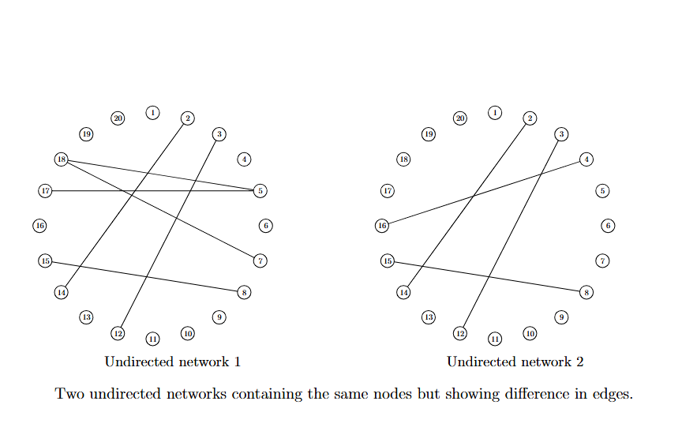

Abstract
In this project, the problem is to characterize differences between two undirected networks in a way that is robust to non-Gaussian data. The proposed method has broad applications, for instance, in detecting differences between gene networks under different health conditions.
Figure 2: Example of two undirected networks that contain the same nodes but exhibit differences in edges.
